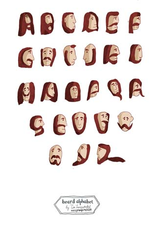

ТИМ И ДОМ
О выставке Тима Яржомбека
Друзья, я очередной раз вернулся и буду стараться поддерживать регулярный ритм, пока хватит тем для разговора. Для начала я коротко. Одновременно (вернее, в четверг 11го числа) в клубе ДОМ открывается новый сезон выставок, и открывает его Тим Яржомбек, некогда иллюстратор-вундеркинд и сын полка Kunstgroup, а сегодня вполне себе звезда, и даже предмет для подражания, лихой и модный художник. Я к Тимовым работам долго относился скептично, но сломался на бородатом алфавите.

Замечательна выставка тем, что Тим только сейчас, с его слов, приступает к освоению собственного "внутреннего мира", который ему до сих благополучно заменяло ТЗ - рисовать в журналы он начал раньше, чем почувствовал себя художником (так тоже бывает). Осваивает он его без принятого нынче вредного фанатизма, просто рисуя шариковой ручкой все, что придет в голову. Описать его новые работы непросто (хотя встречаются вполне внятные и даже, представьте, актуальные высказывания), но и незачем - это песни без слов. Выставка называется "ездоки картофеля", и горе тому, кто станет искать в этом названии постмодернистского глубокомыслия. Ключевое слово - легкость. Не каждого выдержит летающая картофелина, я вам скажу.
Вход как обычно бесплатный, начало в семь, а в 9 будет еще и концерт. Приходите - увидимся.
Виктор Меламед